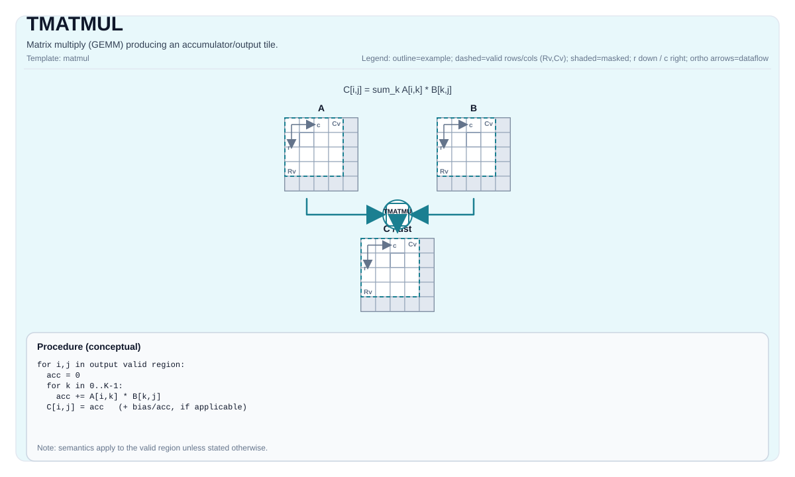

TMATMUL¶
指令示意图¶

简介¶
TMATMUL 是 tile 路径里生成新累加器结果的基础矩阵乘指令。它从 Left 读取左操作数，从 Right 读取右操作数，把结果写入 Acc。
这条指令和 TMATMUL_ACC 分开的原因很直接：TMATMUL 代表“这次计算生成一个新的输出块”，而 TMATMUL_ACC 代表“在已有累加器上继续叠加”。把两者混在一起，会让 K 维分块循环里的资源和调度语义变得不清楚。
数学语义¶
设：
M = aMatrix.GetValidRow()K = aMatrix.GetValidCol()N = bMatrix.GetValidCol()
对 0 <= i < M、0 <= j < N：
有效计算域由输入 tile 的 valid region 决定，而不是单纯由静态 tile 尺寸决定。指令不会隐式做广播、reshape，或把不合法的输入域“修复”为某种可移植结果。
机制¶
TMATMUL 属于 cube 路径，不是普通逐元素 tile 运算：
- 左操作数必须是
Lefttile，对应 L0A 路径； - 右操作数必须是
Righttile，对应 L0B 路径； - 输出必须是
Acctile； - 结果域由
(M, K) x (K, N) -> (M, N)的合法矩阵乘域决定。
Right 虽然在 A2A3 与 A5 上都叫同一个架构角色，但它们的具体布局要求并不完全相同，不能把某一侧的物理布局理解成“全 target 通用”。
汇编语法¶
PTO-AS 形式：参见 汇编写法与操作数。
同步形式：
%acc = tmatmul %a, %b : (!pto.tile<...>, !pto.tile<...>) -> !pto.tile<...>AS Level 1（SSA）¶
%c = pto.tmatmul %a, %b : (!pto.tile<...>, !pto.tile<...>) -> !pto.tile<...>AS Level 2（DPS）¶
pto.tmatmul ins(%a, %b : !pto.tile_buf<...>, !pto.tile_buf<...>) outs(%c : !pto.tile_buf<...>)C++ 内建接口¶
声明于 include/pto/common/pto_instr.hpp：
template <typename TileRes, typename TileLeft, typename TileRight, typename... WaitEvents>
PTO_INST RecordEvent TMATMUL(TileRes &cMatrix, TileLeft &aMatrix, TileRight &bMatrix, WaitEvents &... events);
template <AccPhase Phase, typename TileRes, typename TileLeft, typename TileRight, typename... WaitEvents>
PTO_INST RecordEvent TMATMUL(TileRes &cMatrix, TileLeft &aMatrix, TileRight &bMatrix, WaitEvents &... events);带 AccPhase 的模板重载不改变矩阵乘法的算术语义；它只是让具体后端在 unit-flag 或实现细节上做选择。
输入与输出¶
aMatrix：左操作数 tile，必须是Left。bMatrix：右操作数 tile，必须是Right。cMatrix：结果累加器 tile，必须是Acc。
结果写入 cMatrix。对读者可见的合同是：输出块由本次 A * B 生成，而不是在旧累加器上继续叠加。
约束¶
约束
通用约束¶
- 静态 shape 必须满足：
TileLeft::Rows == TileRes::RowsTileLeft::Cols == TileRight::RowsTileRight::Cols == TileRes::Cols- tile 角色必须满足：
TileLeft::Loc == LeftTileRight::Loc == RightTileRes::Loc == Acc- 运行时
m、k、n必须位于[1, 4095]。
A2A3 约束¶
A2A3 指 Ascend 910B 与 Ascend 910C。当前仓内实现公开支持的 (CType, AType, BType) 组合包括：
(int32_t, int8_t, int8_t)(float, half, half)(float, float, float)(float, bfloat16_t, bfloat16_t)
A5 约束¶
A5 指 Ascend 950 PR 与 Ascend 950 DT。当前仓内实现要求：
- 累加器类型必须是
int32_t或float； - 若累加器为
int32_t，左右输入都必须是int8_t； - 若累加器为
float，当前实现支持half、bfloat16_t、float和部分 fp8 输入对； - A5 还要求固定的角色布局组合：
- Left：
Loc == Left，非 row-major，SFractal == RowMajor - Right：
Loc == Right，row-major，SFractal == ColMajor - Acc：
Loc == Acc，非 row-major，SFractal == RowMajor
不允许的情形¶
不允许的情形
- 使用不是
Left/Right/Acc的角色组合； - 形状不满足
(M, K) x (K, N) -> (M, N)； - 在不支持的 target 上使用不支持的 dtype 组合；
- 把某个 target 上偶然可运行的布局当成可移植合同。
性能与吞吐¶
仓内当前公开的性能数据主要来自 A2A3 costmodel。TMATMUL、TMATMUL_ACC 与 TMATMUL_BIAS 使用同一条 mad/mmad cube 模型：
- 启动开销：
14cycles； - repeat 次数：
ceil(M/16) * ceil(N/16) * ceil(K / baskK)； baskK = 32 / sizeof(left_element_type)；- 单个 repeat 的稳态代价：
- int8、fp16 bucket 为
1cycle； - fp32 bucket 为
2cycles。
因此 A2A3 的公开公式是：
cycles = 14 + ceil(M/16) * ceil(N/16) * ceil(K / baskK) * repeat_cost仓内 costmodel 测试样例包括：
- half
40x50 * 50x60：62cycles； - int8
6x7 * 7x8：15cycles； - float
120x110 * 110x50：910cycles。
当前仓库没有公开单列的 A5 latency / throughput 表，因此 A5 这里只能精确写合法性和 dtype 边界，不能编造周期数字。
示例¶
自动（Auto）¶
#include <pto/pto-inst.hpp>
using namespace pto;
void example_auto() {
using A = TileLeft<half, 16, 16>;
using B = TileRight<half, 16, 16>;
using C = TileAcc<float, 16, 16>;
A a;
B b;
C c;
TMATMUL(c, a, b);
}手动（Manual）¶
#include <pto/pto-inst.hpp>
using namespace pto;
void example_manual() {
using A = TileLeft<half, 16, 16>;
using B = TileRight<half, 16, 16>;
using C = TileAcc<float, 16, 16>;
A a;
B b;
C c;
TASSIGN(a, 0x1000);
TASSIGN(b, 0x2000);
TASSIGN(c, 0x3000);
TMATMUL(c, a, b);
}